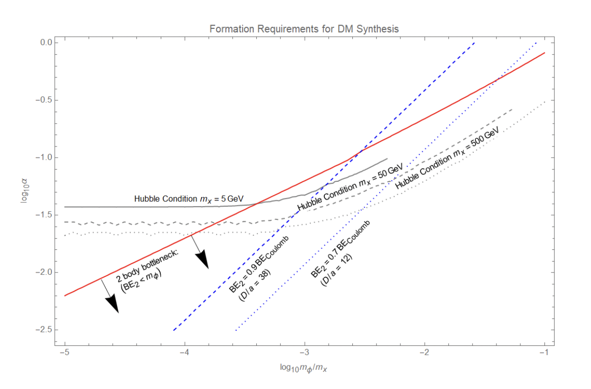

Primary Research: Galactic Evolution
One modern mystery of extragalactic cosmology is the so-called galactic “downsizing” since a redshift of two.
In this period, the characteristic mass of galaxies undergoing active star formation and the luminosity of active galactic nuclei
(AGN) have decreased by over an order of magnitude. This goes against the popular hierarchical model of galaxy formation,
in which we would expect merging events and accretion to
lead to increasing star formation in massive galaxies over time. Because there is a downsizing observed in both stellar masses and AGN size,
it is postulated that these are connected, meaning the mechanism leading to the downsizing of AGN also leads to the quenching
of star forming galaxies. AGN feedback is one such possible mechanism. The radio jets and radiative winds produced by highly energetic AGN
blow out and heat up the gas in and around the galaxy, preventing star formation and AGN growth. The actual mechanism of AGN
feedback is uncertain, as there are several possible forms of feedback and the parameter space of energy injection,
time dependence, thermal heating and mass loading is not well constrained.
One possible method to understand how AGN feedback impacts the gas resevoirs is by using the thermal Sunyaev-Zeldovich (tSZ) effect.
My research focuses on understanding AGN feedback and the tSZ effect using the SIMBA simulation,
in comparison with sub-millimeter observational data from ACT and the newly installed millimeter camera TolTEC. By comparing the SZ signal
seen in various feedback models with observational data it is hoped that a better understanding of the underlying mechanism
of AGN feedback can be gained. In conjunction with the comparison of simulation and observational data, my work also entails
working on the next generation of the SIMBA code. This involves learning how such large scale cosmological simulations
are written and run, and exploring how changes in the parameter space of feedback prescriptions impacts observable signals.

Secondary Project:
Education Research
I also have an ongoing project in education research. ASU is quickly emerging as a leader in online education, but ensuring online students have
access to the same experiences and opportunities as their in-person counterparts remains difficult. One of these important experiences for
undergraduates is participation in research. While there has been much study into the benefits of research for in-person students, expanding
those opportunities for the online population is only just beginning.
In Fall 2022, the School of Earth and Space Exploration introduced a Course-Based Undergraduate Research Experience (CURE)
for online students in the Astronomical and Planetary Science degree program. The outcomes of this CURE will be studied over six semesters of it
being offered.
My research within this project focuses on the procurement and analysis of qualitative data in the form of free-form student
responses to interview questions about the first fully online astronomy research course. This work includes writing the interview questions, conducting some portion of the student
interviews, and coding the qualitative data from the interviews. The ultimate goal is to understand
how participation in ASU’s online research initiative informs student responses to several key factors including: self-efficacy
as it pertains to making meaningful contributions to active research, attitudes about the overall research experience, persistence in their STEM
degree program, and perceived learning gains. By assessing these factors in a qualitative form, we will be able to gain a more
complete understanding of the benefits of online undergraduate research experiences to student learning.
Conducting this sort of research is important to me as someone who is not only interested in astrophysics, but also education and teaching.
The research we do in the field is meaningless unless it can be adequately communicated to the public as a whole, in both and academic and
informal settings. I believe working in education research helps me build a different set of skills while also reminding me that the ultimate
goal of science is to advance human knowledge as a whole, and we should be working to develop the passions of the next generation of scientists.
Undergraduate Research:
Assymetric Dark Matter

In my undergraduate studies at Whitman College, I presented the following research as an Honors Thesis.
Asymmetric Dark Matter (ADM) is gaining traction as an interesting alternative to the more broadly studied Collisionless Cold Dark Matter (CCDM)
Paradigm. ADM particles can interact, scattering and even forming bound states. Given a simplistic model of the dark sector consisting of a fermionic dark
particle and a massive scalar mediator, it could be possible to form bound states with upwards of billions of constituents.
However, as in the early universe nucleosynthesis of baryonic matter, bottlenecks to the formation of bound states could exist.
In this work, we considered several factors that could lead to bottlenecks, and placed constraints on the parameter space of the dark sector
that would allow such bottlenecks to be bypassed. We also presented a broader review of the motivations for Self-Interacting and Asymmetric Dark Matter,
as well as some of the impacts these dark matter models would have on astrophysical objects and phenomena.
You can read my thesis in its entirety here.